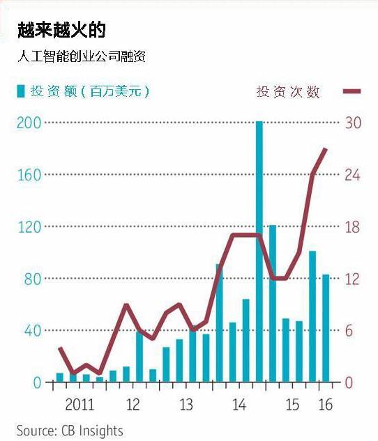

有人看到风险，有人洞见机遇。投资者正在不断涌入这个领域，科技巨头们则在不断收购人工智能创业公司，并争先吸引学术界最优秀的研究人才。 根据数据分析公司Quid的研究数据，在2015年,人工智能企业的成本创下85亿美元的记录,几乎为2010年的四倍。投资公司Playfair Capital 的 Nathan Benaich 说，2015年人工智能企业的投资轮数比上一年多16%，而与此同时科技产业整体投资轮数减少了3%。 Playfair Capital 是一家基金管理机构，该公司在人工智能的投资组合达到25%。「XX＋人工智能」取代了「XX行业的Uber」，成为创业公司默认的商业模式。谷歌，Facebook，IBM，亚马逊和微都想方设法在云端建立人工智能服务的生态系统。「这项技术将会用在各行各业中，只要这个行业有任意种类的数据，图像，语言等数据类型都可以。」MetaMind的创始人Richard Socher说，「人工智能将遍地开花。」MetaMind 是一家人工智能创业公司，最近被云计算巨头 Salesforce 收购。 这意味什么？人工智能对工作，教育，政策的潜在影响，思考它在道德和监管方面的作用。AI 引发的担忧和热情不相上下，同时带来了很多问题，然而值得记住的是，其中的很多问题我们在以前都曾问过，并已经有了答案。